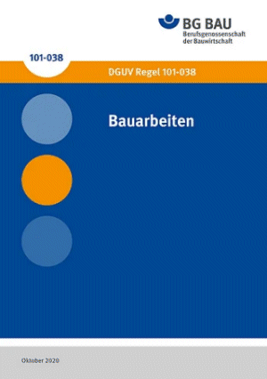

Allgemein anerkannte Regeln sind technische Regeln oder Verfahrensweisen, die wissenschaftlich fundiert und in der Praxis allgemein bekannt sind und sich aufgrund der damit gemachten Erfahrungen bewährt haben.
Allgemein anerkannte Regeln der Technik sind staatliche technische Regeln (z. B. TRGS, TRBS, ASR) sowie ggf. DGUV Regeln, Normen (z.B. DIN-Normen) und Richtlinien (z.B. VDI-Richtlinien).